A visual walkthrough of how WaslProp manages levies, receipts, lot accounts and arrears for Australian strata schemes — shown using a real demonstration scheme, Harbour View Strata.
WaslProp keeps one connected financial picture per strata scheme — from the annual budget through to the balance each lot owner holds today. Every figure on this page is drawn from the live Harbour View Strata demonstration scheme.
Financial year, funds and opening balances are configured once per scheme, with no historical activity invented before the agreed start date.
Annual budgets are built fund-by-fund, revenue against expenditure, with a full version history as revisions are approved.
Quarterly or special levies are raised against the budget and issued to lots instalment by instalment, each one separately recorded.
Every lot has its own running account — charges, receipts and balance — with a statement available at any time.
Owner payments are recorded against the bank and allocated to specific levy charges, or held as credit until the owner's next charge.
Overdue balances are identified automatically by ageing bucket, with a managed workflow for follow-up and reminder letters.
Every transaction is posted to a full general ledger, so the committee and its accountant can always see a balanced, auditable record.
Bank feed reconciliation is in development — see the roadmap page at the end of this document.
Before any levy is raised, the committee's financial year, funds and chart of accounts are configured — and WaslProp never fabricates history before the agreed start date.
A new strata manager is bringing Harbour View Strata onto WaslProp partway through a financial year. They need the scheme's funds and cut-over date set up before any transaction can be recorded.
Start, end and cut-over date — any 12-month cycle, not assumed to be July–June.
Administration and Capital Works funds, each with its own ledger accounts.
Each lot's starting balance, carried in from the scheme's previous records.
A reconciliation check before the scheme goes live on the platform.
A clean, agreed starting point means every figure WaslProp shows afterwards can be trusted — nothing is backfilled or guessed.
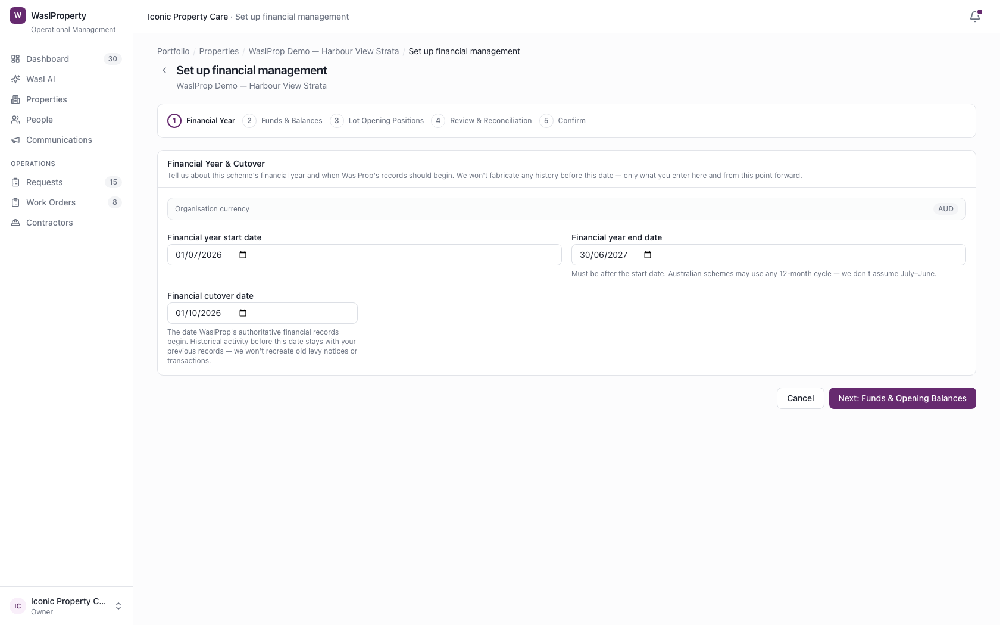
Each financial year starts with a fund-by-fund budget — the figure every levy for the year is ultimately raised against.
The committee approves Harbour View Strata's FY2026/27 budget: AUD 96,000 for Administration Fund running costs and AUD 48,000 for the Capital Works Fund. A revision adds the Capital Works lines after the first draft.
Revenue and expenditure lines entered per fund, by account.
A new version is created rather than overwriting the approved figure.
The active version becomes the reference point for levy issuance.
A full version history means the committee can always see what changed between drafts, and when — without losing the original figures.
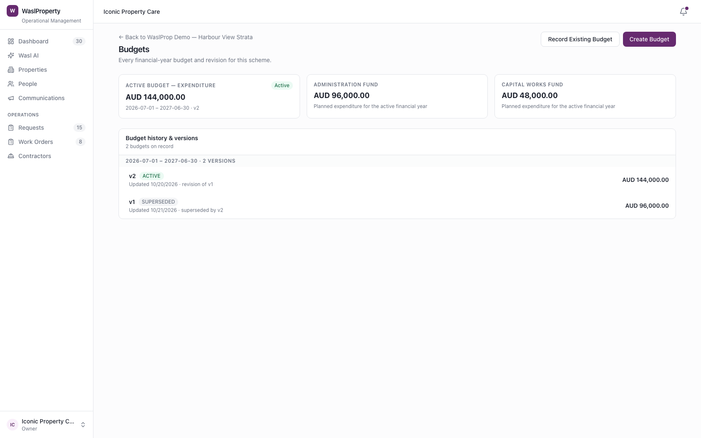
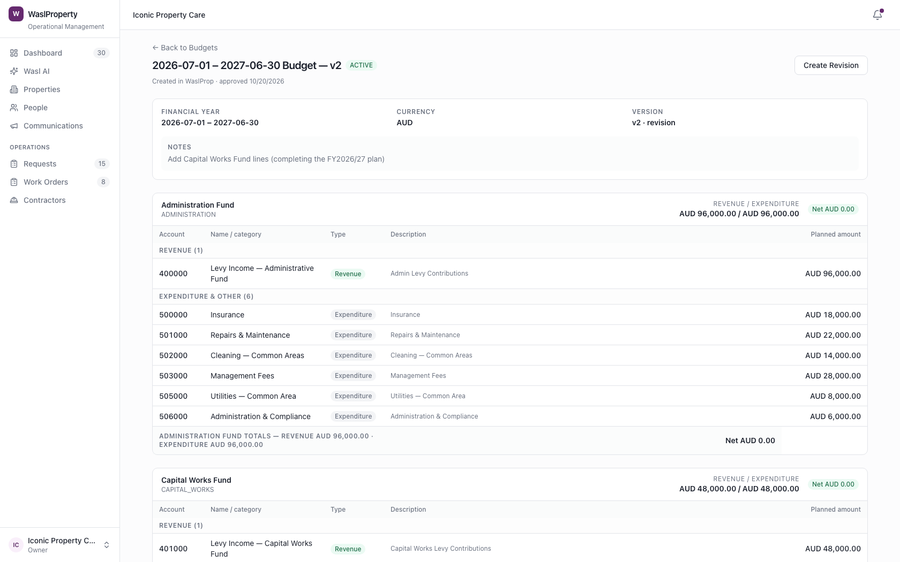
Once a budget is approved, quarterly or special levies are raised against it and issued to every lot — instalment by instalment.
Harbour View Strata's Administration Fund levy is issued as four quarterly instalments of AUD 24,000 each (AUD 96,000 for the year), apportioned across the scheme's 12 lots and posted to each lot's account as it falls due.
Total amount, fund and instalment dates for the year.
Confirms the schedule is ready to issue.
Posted on its own due date — never all at once — with an owner notice for each lot.
Instalments landing on their real due dates keeps each lot's statement accurate to the day, and gives owners advance notice of what's coming.
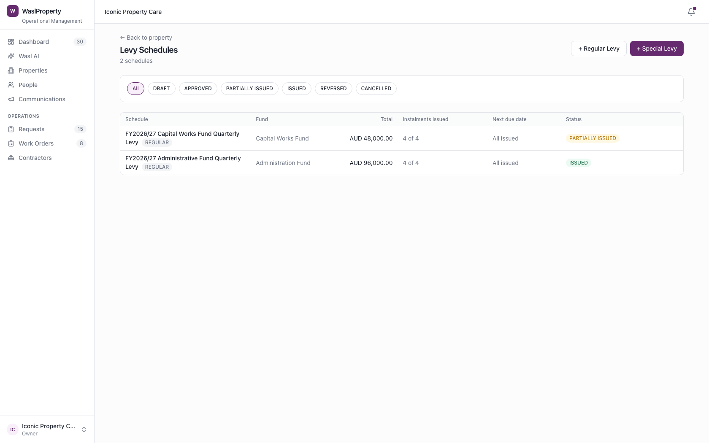
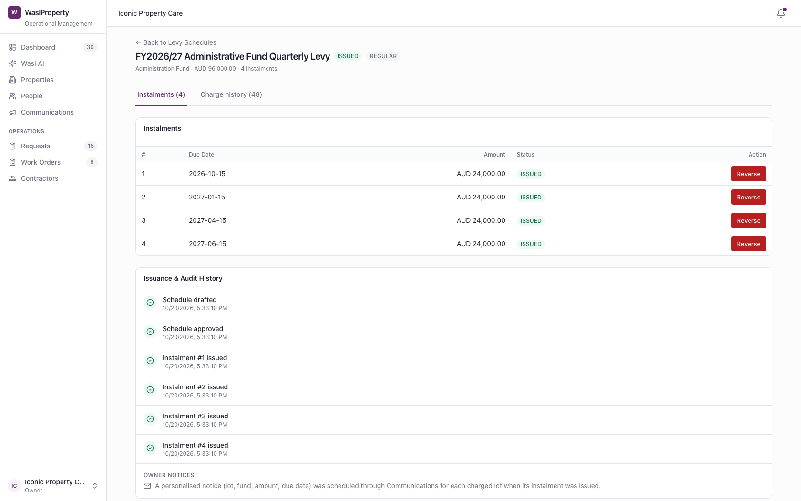
Charges, receipts and balance for each lot are tracked individually — the same record an owner would expect from their own statement.
Lot 1's owner, Sarah Thompson, wants to know where her account stands. Her financial account shows AUD 13,642.11 owing, apportioned across both funds, with every charge and receipt that brought her to that figure.
Total owing, by fund, updated with every transaction.
Everything issued and received against the lot, in one place.
A printable statement for any date range, for the owner or their agent.
Owners and strata managers can answer "what do I owe and why" in seconds, with the full transaction trail behind the number.
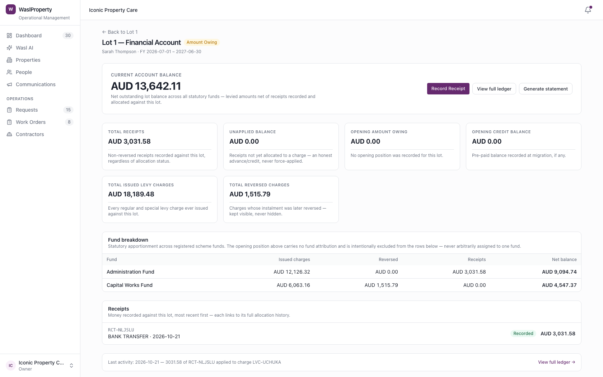
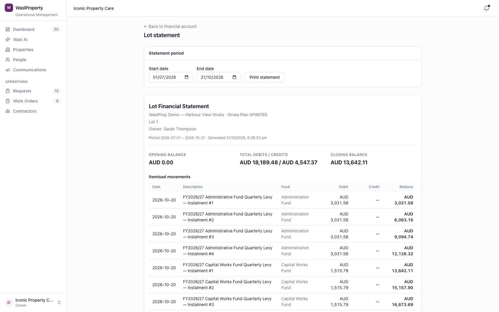
A payment is recorded against the bank first, then allocated to the specific levy charge it pays — or held as credit if the owner pays early.
Sarah Thompson (Lot 1) pays her Q1 Administration levy of AUD 3,031.58 by bank transfer, and it is applied in full. Separately, Michael O'Brien (Lot 4) sends AUD 500 ahead of his next levy — left unapplied until a charge exists to allocate it against, never force-applied.
Amount, method and reference, against the right fund.
Leave unapplied, auto-allocate oldest-first, or choose charges manually.
Applied and unapplied balances are always visible on the receipt.
Owner credit is never assumed to belong to a specific charge — it stays visible as "available" until someone deliberately allocates it.
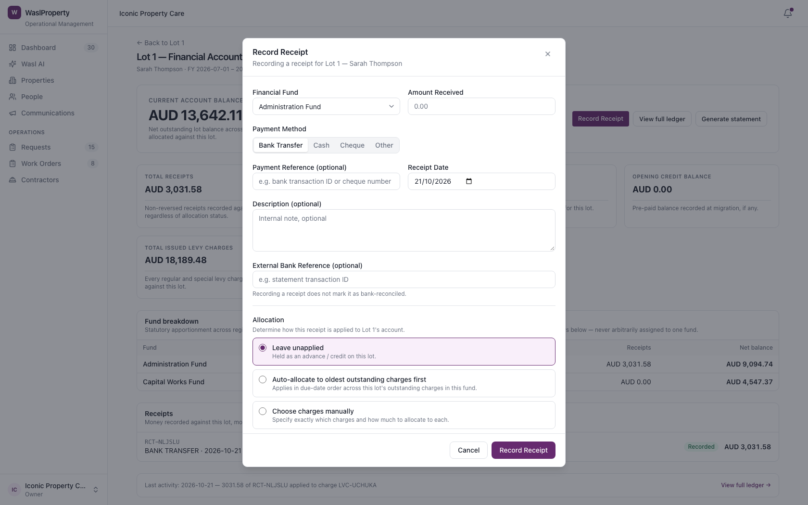
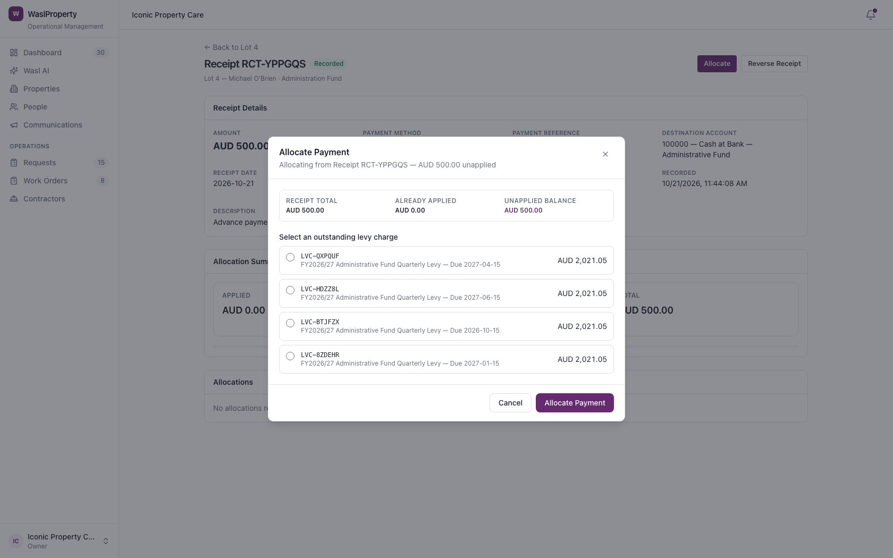
Overdue balances are calculated live from each lot's charges and payments, grouped by age, with a simple workflow for following up.
As of 21 October 2026, 12 of Harbour View Strata's lots have an amount overdue — AUD 29,368.42 in total, all within the 1–30 day bucket. The strata manager opens a collection case for Lot 1 and drafts a reminder letter for review.
Total overdue, ageing distribution, and the funds most affected.
Every lot in arrears, sortable and searchable, with running totals.
Log contact attempts and draft a reminder letter for review before anything is sent.
Reminder letters are drafted for review, never sent automatically — the strata manager stays in control of every owner communication.
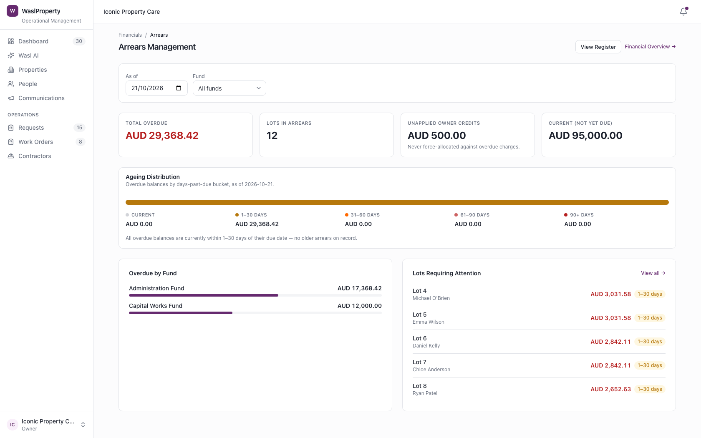
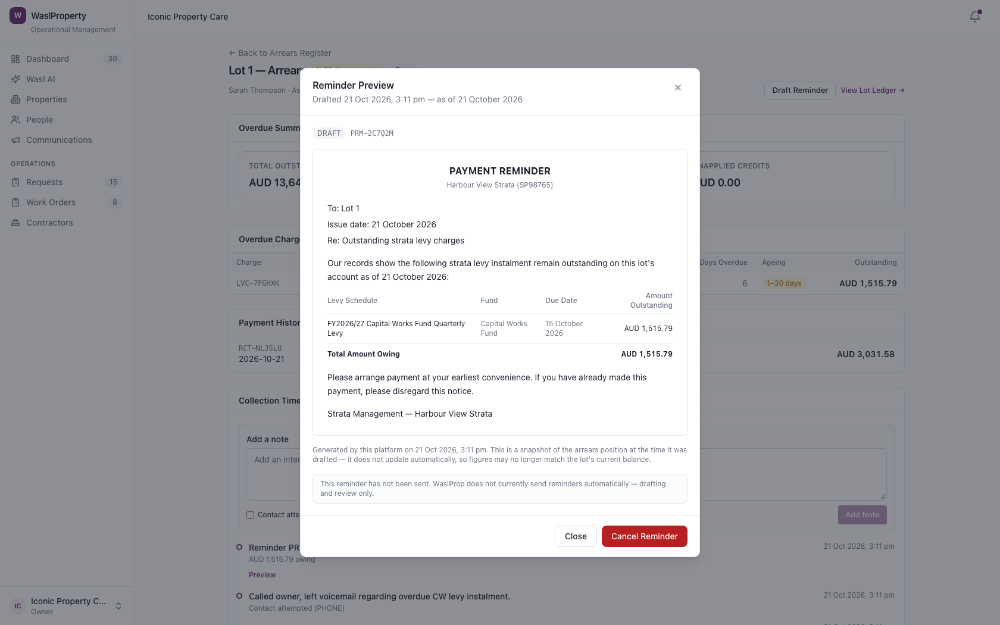
Every transaction in WaslProp — levies, receipts, allocations — posts to a full general ledger, so the committee's accountant always has a complete, balanced record to work from.
Harbour View Strata's committee wants assurance that the numbers on every lot statement tie back to the scheme's overall accounts. The Financial Overview and General Ledger give a single, always-balanced answer.
Cash, receivables and fund balances for the whole scheme, at a glance.
Every journal entry, fully itemised and traceable to its source.
Debits and credits confirmed equal, fund by fund, on demand.
Nothing is a stored "total" that can drift — every balance shown is calculated fresh from the underlying ledger entries, every time.
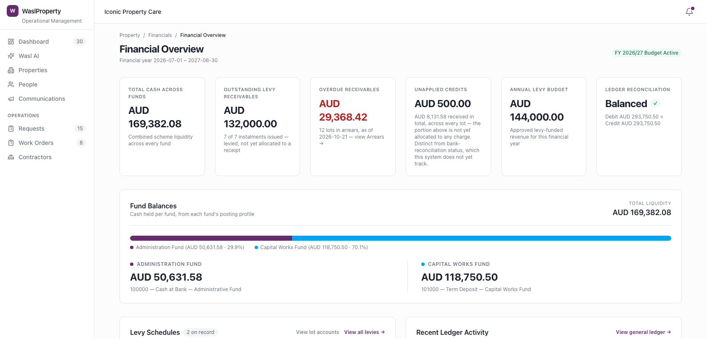
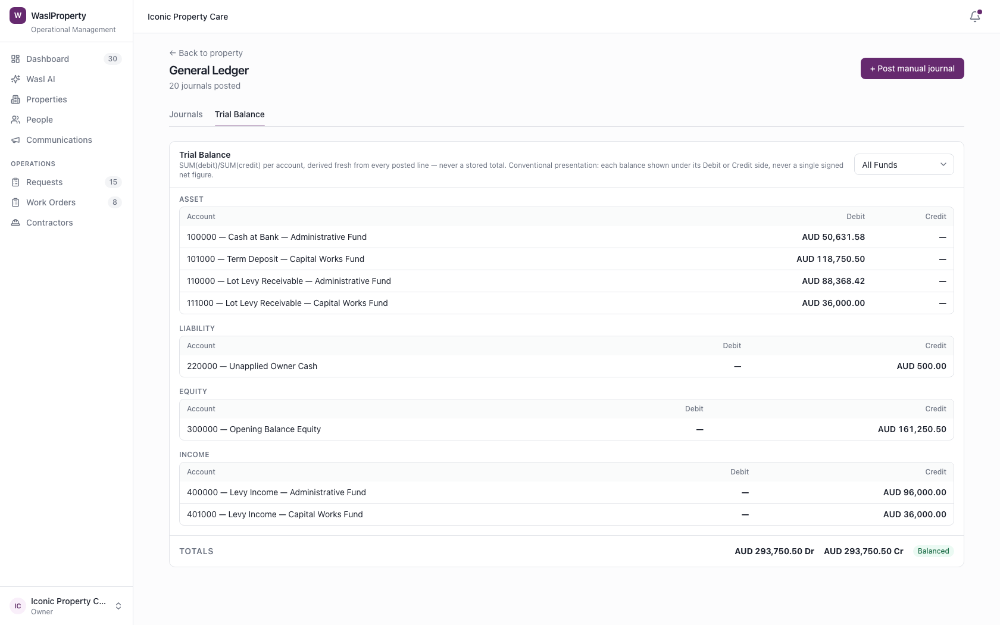
The same demonstration scheme used throughout this document, as of 21 October 2026 — showing how a budget becomes a levy, a levy becomes a lot balance, and a lot balance becomes an overdue figure the committee can act on.
| Step | What happened | Amount (AUD) |
|---|---|---|
| 1. Budget approved | FY2026/27 budget — Administration Fund AUD 96,000, Capital Works Fund AUD 48,000 | 144,000.00 |
| 2. Levies issued | Quarterly instalments issued across both funds to all 12 lots | 124,368.42 |
| 3. Receipts applied | Owner payments recorded and allocated against outstanding charges | 4,547.37 |
| 4. Held as credit | One advance payment (Lot 4) not yet allocated to a charge | 500.00 |
| Net outstanding today | Across all 12 lots, both funds | 124,368.42 |
| Of which, overdue | Past due date, 1–30 day ageing bucket | 29,368.42 |
A summary of the financial management capabilities shown in this document, grouped by area.
WaslProp's financial management capability continues to develop. Items marked "Next" are in progress and not yet committed to a delivery date.
Every journey shown in this document is available now, demonstrated on the Harbour View Strata scheme.
Matching bank statement lines to recorded receipts, to confirm the cash ledger reflects what has actually cleared the bank.
Sending reviewed reminder letters directly to owners — building on today's draft-and-preview workflow.
Every screen, figure and scenario shown in this document reflects WaslProp's current functionality, demonstrated on a representative strata scheme. Items shown as "Next" are planned but not yet available.